입사 후 3개월 · 2월–5월
그로스보드 발표
입사 후 3개월(2월~5월) 동안 넷폼알앤디·POUR공법·아파트스퀘어 세 브랜드에서 만든 것과 배운 것을 정리했습니다.
발표자 · 최경선넷폼알앤디POUR공법아파트스퀘어
01
Overview
전반기 한눈에 — 세 개 브랜드, 세 개의 성과
각 브랜드를 왜 맡았는지 → 어디서 막혔는지 → 어떻게 해결하고 디벨롭할지 흐름으로 정리했습니다.
01넷폼알앤디
벡스코 박람회 콘텐츠 완비
공법 영상·부스 영상·드론 촬영까지 박람회 사전 마감 완료
02POUR공법
담당자 부재 공백을 한 달간 메움
카드뉴스·뉴스레터·홈페이지 유지보수를 약 한 달간 도맡아 운영
03아파트스퀘어
홈페이지 리뉴얼 + 콘텐츠 시작
홈페이지 리뉴얼·결과보고 PPT 신규 제작, 전아모 카페·파워콘텐츠 착수
02
성과 ① 넷폼알앤디 · WHY
정적인 패널만으로는 공법의 차별점이
전달되지 않는 게 문제였습니다
맡은 이유
박람회 영상 콘텐츠 담당
벡스코 박람회에서 공법별 차별점을 보여줄 영상 콘텐츠 제작(공법 영상·부스 영상·드론 촬영 지원)을 맡았습니다.
발견한 문제
체류 시간이 곧 성패
관람객은 부스를 빠르게 지나가는데, 정적인 패널 전시만으로는 공법별 차별점을 직관적으로 전달하기 어려웠습니다.
영상 자리
공법 영상 / 드론 AI 진단 영상
대표 영상 1~2개 썸네일·재생 화면을 넣어주세요
03
성과 ① 넷폼알앤디 · 제작 결과물
박람회를 위해 이만큼의 영상을 직접 만들었습니다
공법 소개·부스 상영·드론 촬영까지, 박람회 한 번을 위해 여러 편의 영상을 기획·편집했습니다.
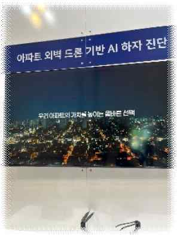
영상공법 소개 영상
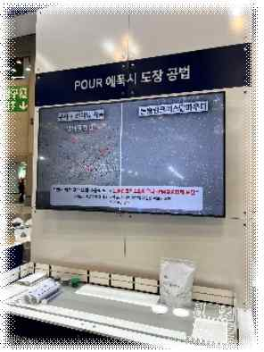
영상부스 상영 영상
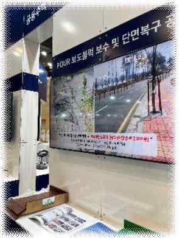
영상드론 촬영 영상
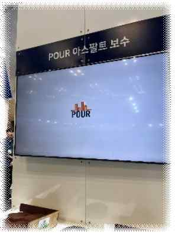
영상공법 상세 영상
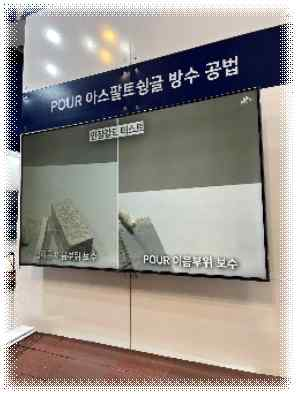
영상인트로·로고 모션
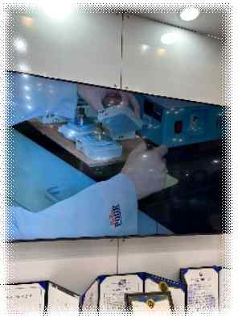
영상추가 편집본
※ 실제 제작 편수에 맞춰 칸을 늘리거나 줄여 캡처를 넣어주세요
성과 ① 넷폼알앤디 · 해결 과정
영상으로 풀어가던 중, 자막에서 한 번 막혔습니다
1
영상 분리 → 재가공
공법 영상을 짧게 분리한 뒤, 큰 화면용·모서리용으로 각각 재가공해 부스 환경에 맞췄습니다.
2
자막 작업
소리 없이도 내용이 전달되도록 공법·기술 설명을 자막으로 넣었습니다.
3
인트로·로고 모션
공법명·로고가 움직이는 인트로 모션으로 영상마다 일관된 브랜드 톤을 더했습니다.
막힌 지점
자막을 원본 영상에 그대로 얹었더니, 영상이 너무 빨라 드론 스캔 과정이 자막을 다 읽기 전에 넘어갔습니다. 음소거 대응으로 넣은 자막이 오히려 이해를 방해한 셈이었습니다.
04
성과 ① 넷폼알앤디 · 결과 & 디벨롭
길이부터 다시 잡아 해결, 박람회 사전 마감까지
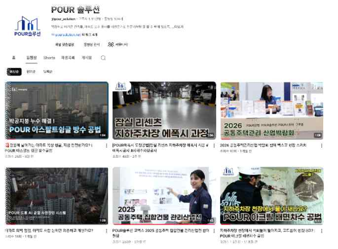
현장🖼️
박람회 부스 현장
images/05-booth.jpg
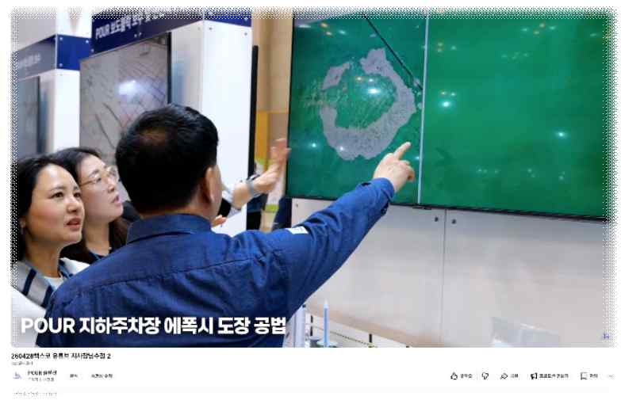
유튜브▶
솔루션 유튜브 채널 게시
images/05-youtube.png
해결 — 사전 마감
자막 분량을 먼저 산정해 영상 길이를 다시 잡았고, 박람회 시작 전 모든 콘텐츠를 일정 내 완비했습니다.
솔루션 유튜브 채널로 재활용
박람회 종료 후에도 영상을 솔루션 유튜브 채널·홈페이지에 게시해, 상시 영업·홍보 자산으로 수명을 늘렸습니다.
디벨롭 방향
자막은 '얹기'가 아니라 '영상 재기획' — 다 읽을 수 있는 길이인지 먼저 산정하는 기준을 템플릿화하고, 박람회 자산을 유튜브·홈페이지 상시 콘텐츠로 재편집할 계획입니다.
05
성과 ① 넷폼알앤디 · 추가 제작 영상
베트남 현지 고객 유치 영상과 슈어포인트 영상도 제작했습니다
이미 진출한 베트남 현지 시장의 고객 유치를 위한 홍보영상과, 슈어포인트 홍보영상을 추가로 제작했습니다.
영상 자리
베트남 현지 홍보영상
이미 진출한 베트남 현지 고객 유치용
영상 자리
슈어포인트 홍보영상
영상 썸네일·재생 화면을 넣어주세요
성과 ① 넷폼알앤디 · 힘들었던 점
입사하자마자 영상부터, 공부할 시간이 없었습니다
힘들었던 점
제작이 학습보다 먼저
입사 후 거의 바로 영상 제작에 투입돼, 공법을 충분히 공부할 시간이 부족한 채로 콘텐츠를 만들어야 했습니다.
오히려 얻은 것
공법 공부의 계기
하지만 영상을 만들려면 공법을 이해해야 했기에, 이 과정이 오히려 공법을 제대로 공부하는 계기가 됐습니다.
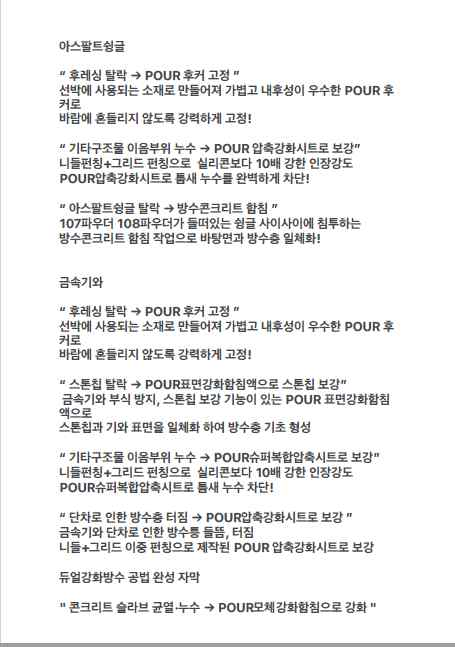
이미지 자리📘
공법 자료 / 영상 제작 화면
images/nf-study.png
배움
현장에 빨리 투입되는 만큼 '만들면서 배우는' 속도가 필요했고, 결과적으로 공법 이해도가 빠르게 올라갔습니다.
성과 ② POUR공법 · WHY
담당자 공백, 공법 커뮤니케이션 전반을 약 한 달간 맡았습니다
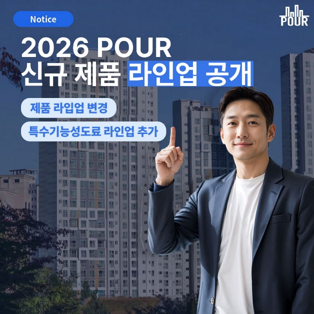
이미지 자리🖼️
신규 라인업 공지 / 단가표 시안
images/06-pricing.jpg
맡은 이유
담당자 부재 · 약 한 달 대행
기존 담당자 공백으로, POUR공법의 카드뉴스·뉴스레터·홈페이지 유지보수를 약 한 달간 도맡아 운영했습니다.
발견한 문제
단가표 갱신 + 안내 부재
단가표가 새로 나왔는데 시공사가 옛 정보를 쓸 수 있었고, 지원·문의 경로 안내도 정리되지 않은 상태였습니다.
06
성과 ② POUR공법 · 카드뉴스
한 번에 다 안 읽힐까 봐, 여러 장으로 나눠 만들었습니다
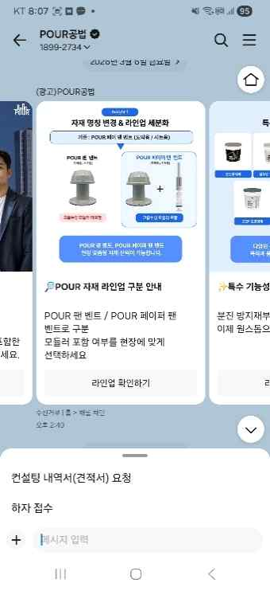
카드뉴스🖼️
신규 단가표 안내
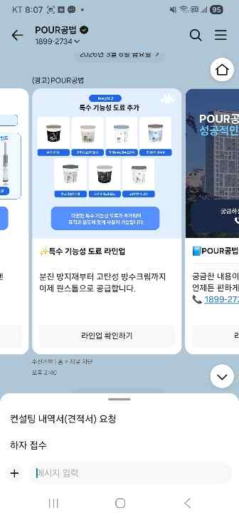
카드뉴스🖼️
문의담당자 안내
왜 여러 장인가
정보량 ↑ = 이탈 ↑
한 장에 모든 내용을 담으면 정보량이 많아 중간에 이탈하기 쉬워, 주제별로 카드를 나눠 한 장당 한 메시지만 전하도록 구성했습니다.
추가 제작
문의담당자 카드뉴스
단가 안내와 별개로, 문의가 어디로 가야 하는지 헷갈리지 않도록 담당자·연락 경로를 정리한 카드뉴스도 따로 제작했습니다.
워딩 디벨롭
'단가표 변경' 대신 '제품 라인업 변경'으로 표현을 바꿔 가격 통보처럼 딱딱하게 비치지 않도록 했습니다. 같은 정보도 어떤 워딩에 담느냐가 수신자의 인식을 좌우한다는 걸 배웠습니다.
성과 ② POUR공법 · 뉴스레터
같은 소식을 채널·버전별로 맞춰 발송했습니다
카카오톡 채널
스티비 버전
4뉴스레터 4장
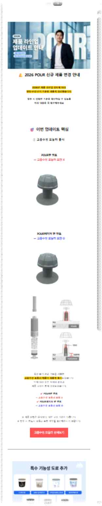
뉴스레터✉️
뉴스레터 ①·②
 뉴스레터
뉴스레터✉️
뉴스레터 ③·④
발송 채널
카카오톡 채널 · 스티비
고객 접점에 맞춰 카카오톡 채널과 스티비(이메일) 두 경로로 발송해, 한쪽에서 놓치더라도 다른 채널에서 닿도록 했습니다.
제작 분량
뉴스레터 4장 구성
전달할 내용을 한 번에 몰아 보내지 않고 4장으로 나눠, 소식별로 가볍게 읽히도록 구성했습니다.
성과 ② POUR공법 · 홈페이지 유지보수
홈페이지 정보를 최신 상태로 유지했습니다
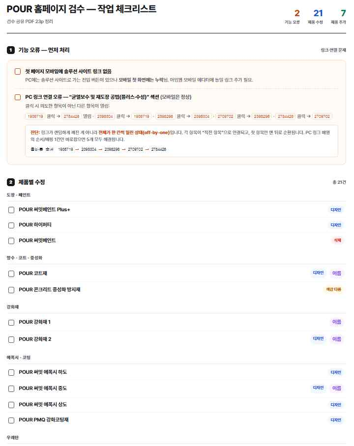
이미지 자리🖥️
POUR공법 홈페이지
images/pour-web.png
콘텐츠·정보 최신화
단가·제품 라인업 변경에 맞춰 홈페이지 콘텐츠와 정보를 최신 상태로 관리해, 방문자가 옛 정보를 보지 않도록 했습니다.
신뢰도·영업 연결성 유지
카드뉴스·뉴스레터로 안내한 내용과 홈페이지를 일치시켜, 사이트 신뢰도와 영업 연결성을 유지했습니다.
디벨롭 방향
앞으로 카드뉴스·뉴스레터·홈페이지 멀티채널 발송을 정례화·자동화해, 담당자가 누구든 같은 품질로 안내가 나가도록 만들 계획입니다.
성과 ③ 아파트스퀘어 · WHY
유입을 늘리려면 보여줄 자산과 콘텐츠가 필요했습니다
맡은 이유
홈페이지 리뉴얼 + 콘텐츠 담당
아파트스퀘어의 홈페이지 리뉴얼과 결과보고·콘텐츠 등 디지털 자산을 정비해, 브랜드 유입을 끌어올리는 일을 맡았습니다.
발견한 문제
보여줄 자산·유입 경로 부족
신규 브랜드라 고객에게 보여줄 정돈된 홈페이지·콘텐츠가 부족했고, 자연스러운 유입 경로도 거의 없는 상황이었습니다.
영상 자리
드론 AI 하자진단 유튜브 영상
유튜브 썸네일·재생 화면을 넣어주세요
09
성과 ③ 아파트스퀘어 · 홈페이지 리뉴얼
브랜드의 얼굴, 홈페이지를 리뉴얼했습니다
 이미지 자리
이미지 자리🖥️
아파트스퀘어 홈페이지 (리뉴얼)
images/aps-home.png
정돈된 첫인상
방문자가 브랜드와 서비스를 한눈에 이해할 수 있도록 구성·메시지를 정리해 홈페이지를 리뉴얼했습니다.
유입의 도착지
카페·콘텐츠에서 들어온 방문자가 머무를 수 있는 도착지로서, 홈페이지를 유입 경로의 기준점으로 정비했습니다.
성과 ③ 아파트스퀘어 · 결과보고
없던 자료, 결과보고 PPT를 새로 만들었습니다
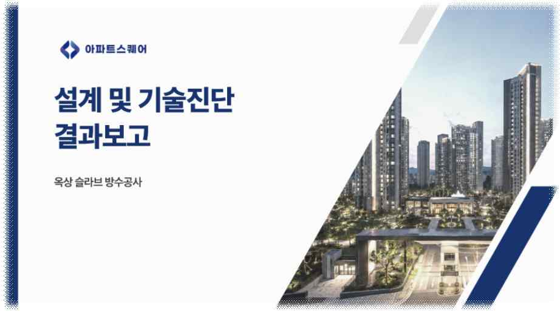
이미지 자리📑
아파트스퀘어 결과보고 PPT
images/aps-report.png
처음 만든 양식
기존에 없던 결과보고 자료를, 고객·내부에 진행 결과를 정리해 보여줄 수 있는 PPT 양식으로 처음부터 새로 제작했습니다.
재사용 가능한 틀
한 번 쓰고 끝나는 게 아니라, 이후 보고에도 이어 쓸 수 있는 기본 틀로 만들었습니다.
성과 ③ 아파트스퀘어 · 콘텐츠
유입을 만들 콘텐츠를 시작했습니다
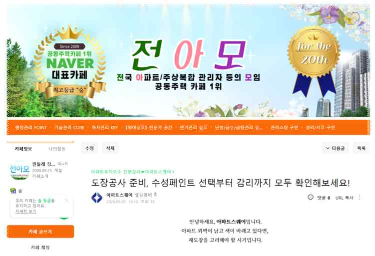
카페💬
전아모 카페 포스팅
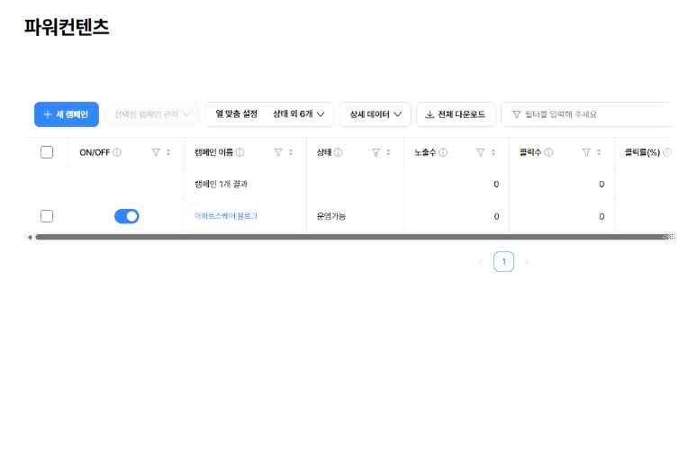
파워콘텐츠⚡
파워콘텐츠 (시작)
전아모 카페 포스팅
타깃 고객이 모이는 전아모 카페에 글을 올려, 브랜드를 노출하고 자연 유입 경로를 만들기 시작했습니다.
파워콘텐츠 착수
검색 유입을 노린 파워콘텐츠를 시작해, 콘텐츠 기반의 유입 채널을 본격적으로 열었습니다.
성과 ③ 아파트스퀘어 · 배움 & 디벨롭
빨리 만들기보다, 누구에게 하는 말인지가 먼저였습니다
이미지 자리
🎯
페르소나·톤앤매너 정리
확보한 것
홈페이지 리뉴얼·결과보고 PPT·전아모 카페·파워콘텐츠까지, 유입을 만들 기반을 마련했습니다.
다음 과제
콘텐츠를 빠르게 진행하다 보니 대상 정의가 뒤로 밀렸던 만큼, 페르소나·톤앤매너 정의를 먼저 잡는 것이 우선순위입니다.
배움 → 디벨롭
신규 브랜드는 '빠른 제작'보다 '누구를 위한 콘텐츠인가'를 먼저 정의해야 한다는 걸 배웠습니다. 정의 1주가 재작업 3주를 막습니다.
Also Done
메인 성과 외에도, 이런 일들을 챙겼습니다
이미지 자리
🎬
영상 워터마크 화면
넷폼알앤디
실험 영상 워터마크 표시
타 업체가 우리 실험 영상을 무단으로 사용하는 사례가 있어, 영상에 워터마크를 넣어 무단 도용을 방지했습니다.
이미지 자리
💳
명함 시안
공통 · 브랜딩
명함 제작 진행
브랜드 톤에 맞춘 명함 제작을 진행해 대내외 커뮤니케이션 자산을 정비했습니다.
12
Lessons & Next
전반기에 배운 것 3줄, 그리고 하반기 계획
교훈 ①
길이를 먼저 산정한다
자막·콘텐츠는 '얹기'가 아니라 '재기획'. 수신자가 다 소화할 수 있는지부터 본다.
교훈 ②
워딩이 인식을 바꾼다
같은 내용도 어떤 표현에 담느냐에 따라 수신자가 받아들이는 인상이 달라진다.
교훈 ③
정의가 제작보다 먼저
신규 브랜드는 '누구를 위한 자산인가'를 정의한 뒤 만들어야 재작업이 줄어든다.
- 아파트스퀘어 — 페르소나·톤앤매너 정의를 마무리하고 콘텐츠 트랙을 본격화
- POUR공법 — 멀티채널 발송 체계를 자동화·정례화해 영업 리드타임 단축
- 넷폼알앤디 — 박람회 자산을 유튜브·홈페이지 상시 콘텐츠로 재편집
15
What's Next
아파트스퀘어 담당자로서
이제부터는 아파트스퀘어의 유입률을
3배로 끌어올리는 데 집중하겠습니다
3배로 끌어올리는 데 집중하겠습니다
목표
유입률 3배
홈페이지·전아모 카페·파워콘텐츠로 만든 기반 위에서, 유입을 정량 목표(3배)로 잡고 끌어올리겠습니다.
방법
콘텐츠 발행에 집중
페르소나·톤앤매너를 먼저 정리한 뒤, 꾸준한 콘텐츠 발행으로 자연 유입 채널을 키우는 데 힘을 쏟겠습니다.
Thank you
감사합니다
왜 · 막힌 지점 · 해결 · 디벨롭 — 입사 후 3개월의 기록이었습니다. 질문 환영합니다. Q & A
최경선 · 입사 후 3개월 (2월–5월)
16